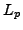

We present a newly computationally efficient numerical scheme for minimizing the flow formulation of the optimal  mass transport mapping. We consider the fluid dynamic formulation of the problem, in which we cast the time-dependency of the mass preserving partial differential equation as an additional (artificial) spatial dimension. We present an algorithmic framework tailored for solution of large scale problems using the proposed formulation. Our implementation accounts for changes in intensity, which empowers it to function in situations where high dynamic range (high contrast) images are involved. Lastly, we demonstrate the effectiveness of our approach with numerical examples.